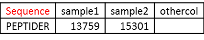
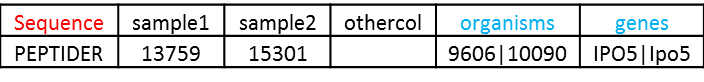
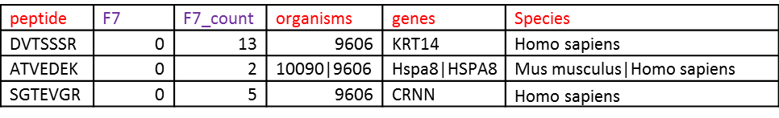
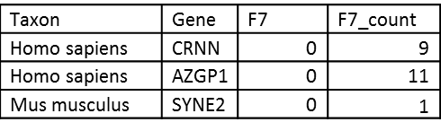

Targeted Database Searches¶
Database searches typically generate result files containing unique peptide sequences and quantitative information which can be annotated and quantified for taxon-specific proteomics using ProteoClade.
File Format Requirements¶
ProteoClade uses generic tab-delimited or comma-delimited text files for annotation. The table only requires a single column (RED).
Annotation¶
The sequence column can be named “Sequence”, “Peptide”, or “pep_seq”, and peptides should be represented as sequences in all capital letters (any other characters will be stripped prior to matching). Any number of additional columns can be included. These files are annotated with the function annotate_peptides:
annotate_peptides(file, db, pctaxa, taxon_levels = None, worker_threads = None)
Example:
>>> annotate_peptides('myinput.csv', 'hu_mou_sp.pcdb', '190101.pctaxa', taxon_levels = 'species')
With default parameters, a file will have the following output, with multiple annotations for a given peptide separated by the pipe symbol (new columns: BLUE).
Gene Level Quantitation¶
In order to represent the proteomics data as gene products rather than peptides, annotated peptide files can be summed to the gene level using the roll_up function. This produces a gene and taxon-specific list of genes with their relevant quantitative information. Note that the default taxon for annotation is “species”, so make sure this is added when the annotate functions are called. For this process, there are two ways of signifying sample columns, which will be used for quantitation:
“implicit” : ProteoClade will use anything that is not known to be a ProteoClade used or generated column. Use command proteoclade_cols to see columns that ProteoClade will safely ignore.
“explicit” : ProteoClade will only select columns that begin with the text “sample_”.
The following example input format, using the “implicit” method, shows the columns that ProteoClade knows to ignore in RED with sample columns implicitly found in PURPLE:
Example:
roll_up("annotated_myinput.csv")
# Roll up to genes if peptide belongs to a single species
The output shows the unique taxon that was assigned, the gene, a sample’s quantitative value, and its spectral counts if derived from a PSM/de novo file. Note that for the sake of gene uniqueness, genes are converted to upper case:
